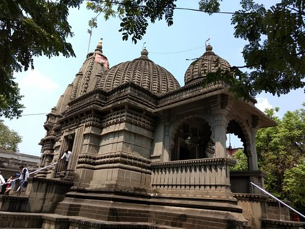

|
Home | Booking | Contact Us | Review |
|---|
| Shopping | Hotels | Restaurants |
|---|
|  |  |
 |
|---|---|---|
| by prathiksha The idols here beautifully carved in black stone and they are centuries old. The temple is maintained really well and the Parikrama is clean. Must visit temple in Nasik.It is fun actually. once you get the top of stairs there is a narrow passage around the hill which will take you further. And boy, this passage is something. The thousands feet height doesn't helps you but looking down that gradient can give you chills and adrenaline rush at the same time. Date of experience: November 2019 |
by kalpesh Nice experience, there are steps all around. it was raining when we visited there, so was quite slippery. many small stalls for tea and snacks around. also, we saw some monkeys. overall easy and nice experience nature was at its best.It is fun actually. once you get the top of stairs there is a narrow passage around the hill which will take you further. And boy, this passage is something. The thousands feet height doesn't helps you but looking down that gradient can give you chills and adrenaline rush at the same time. Date of experience: August 2019 |
by Anjali I have been to lots of treks but this one was different. Easy for the starters but as soon as you reach the stairs the whole scenario changes. You have to literally get down on your fours and crawl upto the top. It is fun actually. once you get the top of stairs there is a narrow passage around the hill which will take you further. And boy, this passage is something. The thousands feet height doesn't helps you but looking down that gradient can give you chills and adrenaline rush at the same time. Do this trek once and you will be amazed with the astounding beauty of the hills. Date of experience: July 2019 |
 |
 |
|
|---|---|---|
| by savita An unassuming entry leading to a long and tricky climb up the steps of the hill and voila....you will reach the Pandavleni Caves, 13 of them, with carvings, and stone work. The climb can be even trickier during monsoon. Pretty much kept clean and maintained, as one would expect if 15rs per person (of indian origin, free for children) is charged an entree fee. From the top one can also see the extents of Nashik city and also get a good view of the highway leading to Mumbai. Date of experience: November 2019 |
by Ishika Beautiful place and the temple is very peaceful and one feels blessed being there. Now its very easy to use a path known rope way which is a tram which has air-conditioned facilities and well maintained. It just took less than 2minutes to reach the temple once we board the tram. Darshan queue was a very systematic and very well managed. The way to the temple has beautiful surrounding which have wonderful climate.A must visit religious temple. Tourism should be promoted as the climate is so fresh and place is extremely peaceful. Date of experience: September 2018 |
by Ishita Easy trek but be careful. The forts has some monuments and a hidden place which seems like old route of harihar fort which has a deep storage or might be old darwaja but going there is risky. Go at your own risk.It is fun actually. once you get the top of stairs there is a narrow passage around the hill which will take you further. And boy, this passage is something. The thousands feet height doesn't helps you but looking down that gradient can give you chills and adrenaline rush at the same time. |